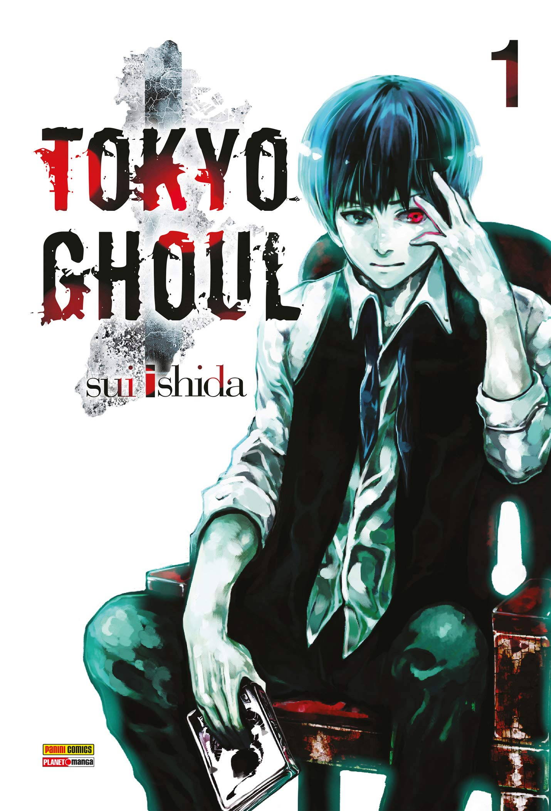
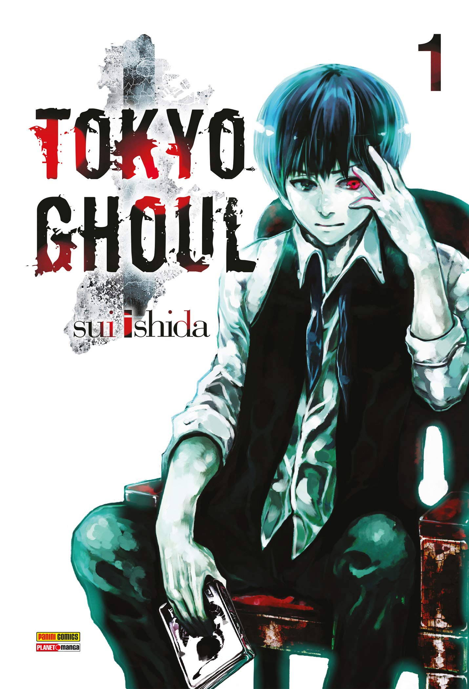
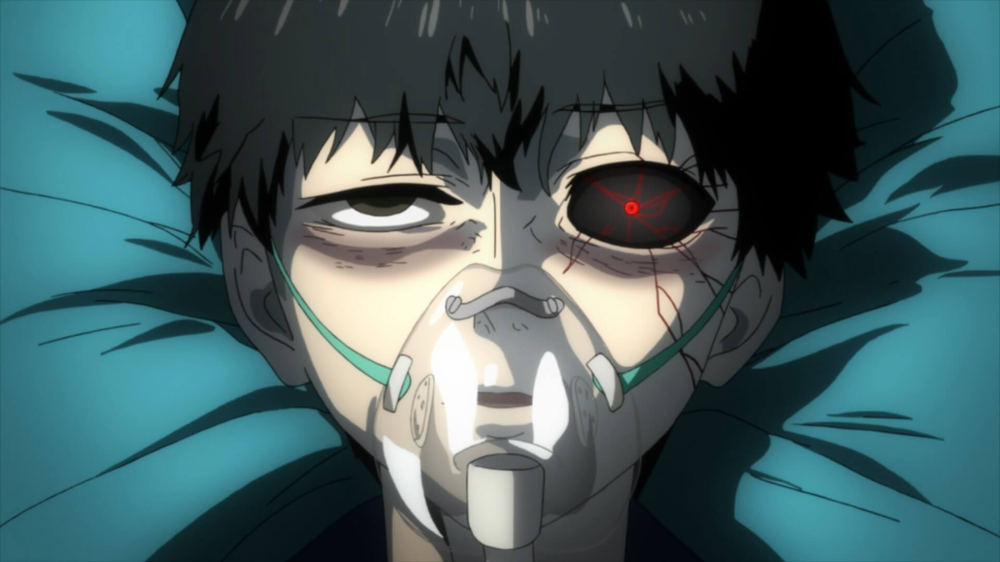

Tokyo Ghoul


Tokyo Ghoul é um anime de terror e suspense protagonizado por Kaneki Ken. No mundo de Kaneki existem dois tipos de pessoas, os seres humanos normais e os Ghouls. Infelizmente, os Ghouls só conseguem se alimentar de carne humana o que os torna predadores naturais de pessoas como Kaneki.
Inocente, ele logo é atraído para a armadilha de uma Ghoul, porém ambos acabam se envolvendo em um acidente e Rise morre. Como eram considerados compatíveis, os órgão da Ghoul são transplantados em Kaneki e seu corpo passa rejeitar comidas normais. Faminto, ele acaba sendo atraído para um corpo morto em um beco onde é salvo por Touka.

Touka é uma menina durona, mas muito gentil. Além de salvar o rapaz ela o convence a se alimentar da carne, e acaba levando ele a um local seguro. Sem pais para cuidar dela, Touka nasceu Ghoul e vive entre os humanos usando um disfarce. Ela não só não odeia humanos, como busca se alimentar sem feri-los, o que é difícil em um mundo onde humanos e Ghouls mais fortes batem de frente com ela.
Touka leva Kaneki para um café chamado Anteiku, e lá ele descobre que nem todo Ghoul só pensa em matar para comer. Agora Kaneki se encontra entre o mundo cruel dos Ghouls e o dos seres humanos, e não sabe mais quem é o vilão da história. Seriam os humanos, que matam qualquer Ghoul sem se importar com o fato de eles não escolherem ser assim ? Ou seriam os Ghouls que comem carne humana para sobreviver ?
O mais intrigante de Tokyo Ghoul é que ele mostra um pouco de todos os lados dessa história. Sem apontar um lado especifico como ruim, ele nos apresenta diferentes pessoas com diferentes ideias. Unindo pesadas reflexões a boas lutas, ele se mostra um anime belo e profundo em quanto acompanhamos o desenvolvimento de seus personagens.
link para mais informações no forum oficial